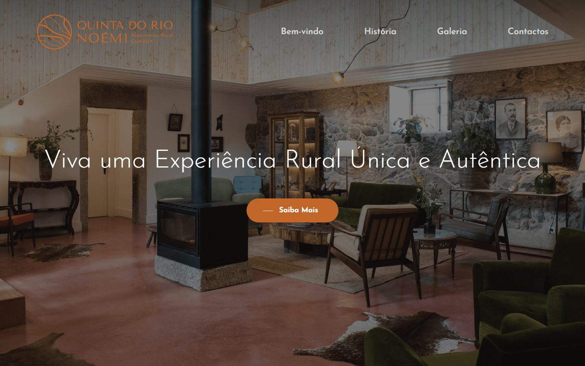
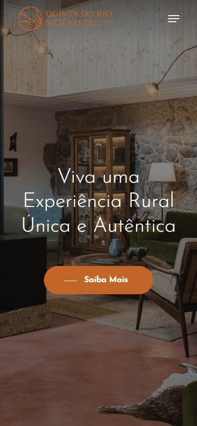
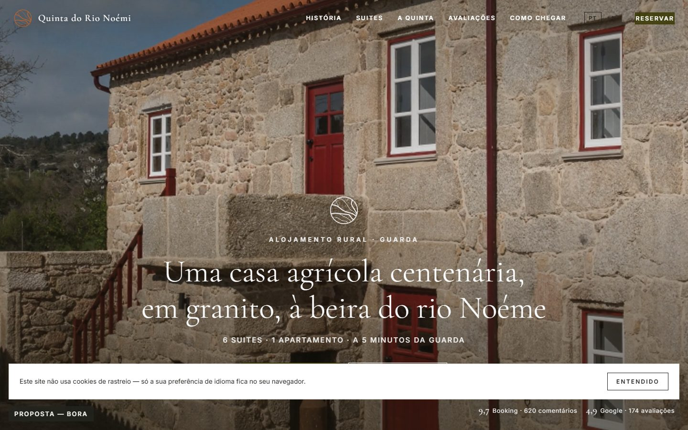
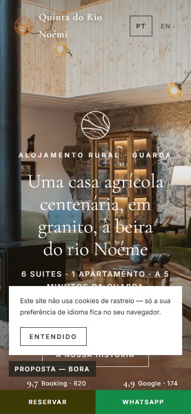
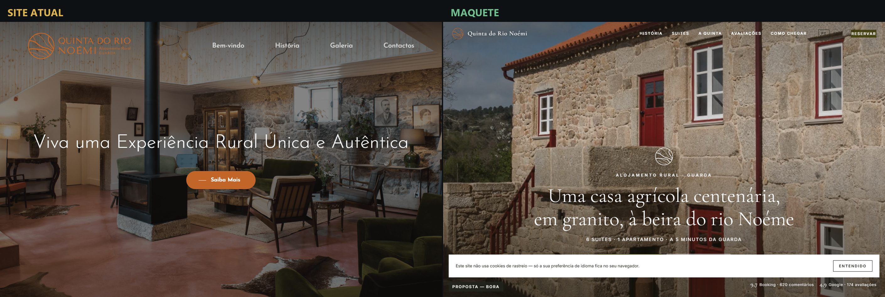
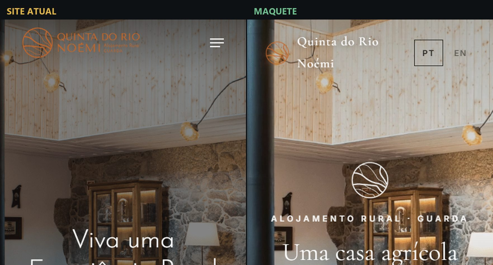

Capturas reais do trabalho da linha de propostas. Esta pasta existe para a Claude.ai ver com os próprios olhos (noindex; permitida no robots).






# Teste dos 3 segundos — Quinta do Rio Noémi > Juiz de visão: executor da sessão (Claude), 2026-08-31. > Pergunta única: "qual destes dois parece o site mais caro e mais profissional?" ## VEREDITO: A MAQUETE GANHA (à segunda tentativa) ## O que aconteceu à primeira Na primeira composição o duelo estava perto de empate: o site atual abre com a sala acolhedora da salamandra (calor emocional real) e a primeira versão da maquete abria num exterior de céu nublado — tipografia melhor, temperatura pior. Empate manda corrigir, e corrigiu-se: o vídeo do herói passou a abrir nos planos quentes (porta vermelha da casa de granito, sala da salamandra), o véu ganhou um tom quente e o aviso de cookies deixou de tapar o primeiro olhar (só aparece ao rolar). ## Porquê ganha agora, em concreto À esquerda: sala simpática mas escura e cheia, título fino de tema WordPress, botão-pílula laranja de template, zero prova social. À direita: granito dourado em ecrã cheio com a porta vermelha a puxar o olho, serifada editorial grande, "6 SUITES · 1 APARTAMENTO · A 5 MINUTOS DA GUARDA" em caixa alta espaçada, notas 9,7 e 4,9 com origem, botão RESERVAR presente. A maquete parece um hotel boutique publicado numa revista; o site atual parece um tema comprado. E ao vivo o herói é filme em movimento. Compostos: `3segundos-1440.png` e `3segundos-390.png` nesta pasta.